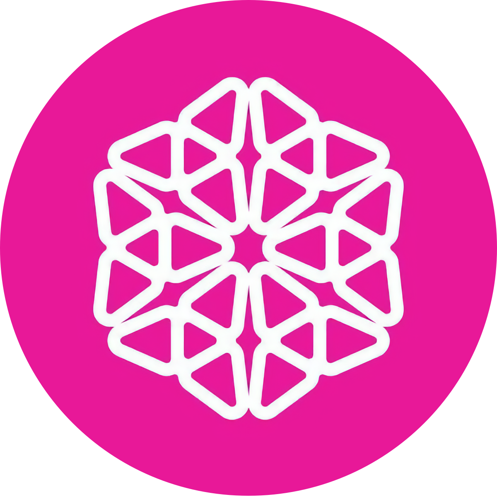

Research
Docs
Gwyneth Technical Design - Brecht Devos
Videos
L1 Composability in Gwyneth - Cecilia Zhang
Presentation Slides
Preconfirmations in Taiko Gwyneth - Brecht Devos
Shared Sequencing & Synchronous Commitments - Brecht Devos
House of ZK Interview w/ Brecht Devos